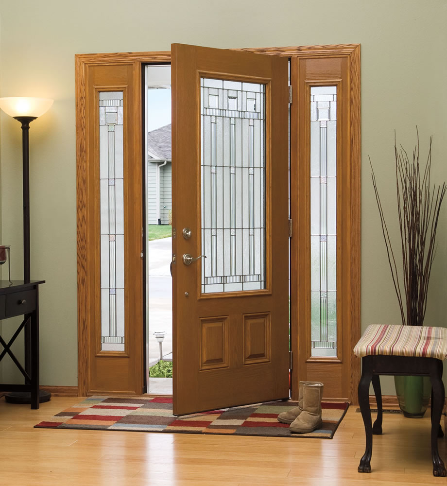

Деревянные двери могут создать уютную и теплую атмосферу в вашем доме или строгость и здержанисть в офисных помещениях.
Если вам не нравится безликая продукция, которая_насаживается массовым производством, и нужны качественные деревянные межкомнатные или входные двери, а также надежная их установка, то вы попали по адресу. Деревянные двери считались лучшими дверями во все времена. Когда только они и были, а сейчас, когда умеют делать предметы буквально из ничего, дерево завоевывает еще большую популярность. Наша специализация - изготовление деревянных дверей любого уровня сложности - от строгих классических вариантов до оригинальных художественных решений, в том числе и арочных. Дерево - живой материал, природный, значит и экологически безопасен для здоровья. Мы ценим каждого заказчика и делаем все возможное, чтобы процесс заказа и установки дверей не приносил никаких проблем. Большой выбор, широкая гамма цветов, любые размеры. Возможна установка филенок МДФ с покрытием шпона.
Сегодня двери из дерева являются желательным и фактически необходимым дополнением дизайна любого помещения. Действительно, красивые и стильные двери из массива дуба или сосны будут выглядеть органично и изящно как в домашнем интерьере, так и в любом офисном помещении.
К изготовлению деревянных дверей предъявляют ряд обязательных требований. Прежде всего, это высокая прочность. Модели, которые производятся нашей компанией, в полной мере обладают таким свойством. Для того, чтобы достичь этой характеристики, мы подходим к их изготовления очень внимательно. Во-первых, в ход идет высококачественная, а также хорошо просушена древесина, которая отвечает всем необходимым техническим параметрам.
Кроме этого, дополнительные элементы для будущей двери из натурального дерева обязательно должны быть обработаны специальным раствором. Он позволит защитить материал от возможных неблагоприятных воздействий в будущем. Вообще, весь процесс создания дверей из этого материала, прежде всего, требует много времени, а также качественного сырья и дорогостоящего оборудования.
Если говорить о том, какие именно элементы являются наиболее оптимальными в соотношении цены, прочности и качества, то, конечно же, это будут двери из массива ореха или дуба. А вот наиболее доступными остаются двери из ели и сосны.
К тому же двери, изготавливаемые компанией «Виндзор», отличаются хорошей звукоизоляцией. Входные деревянные двери, например, из дуба, а также межкомнатные двери из массива сосны или дуба, предоставят возможность ограничить себя от посторонних звуков или шума, когда нужно отдохнуть или поработать.
Мы предлагаем только качественно изготовленные красивые деревянные двери. Они будут служить вам долго, радуя достойным внешним видом и прочностью.